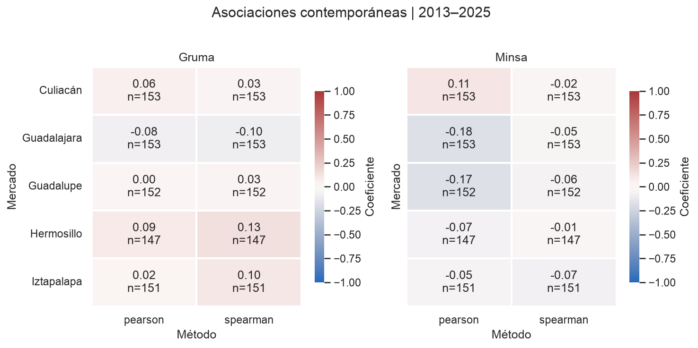
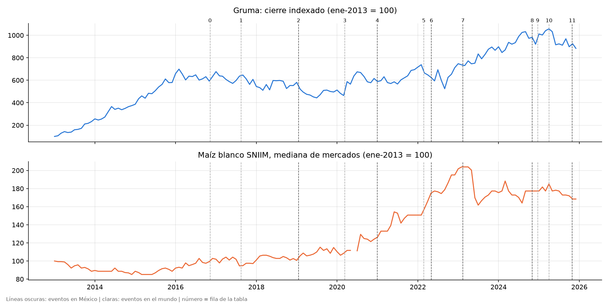

Variaciones del precio regional del maíz blanco en México y rendimientos mensuales de GRUMAB.MX, 2013–2025
Se mantiene al quitar extremos, separar por periodos y probar rezagos de 1 a 3 meses: ninguna es significativa.
El precio del maíz es muy local: hasta los mercados entre sí se correlacionan poco (máx. 0.30).


Producción de maíz en Sinaloa, 2023 a 2025, por la sequía (DGSIAP). Aun así el precio bajó: el faltante se cubrió con importaciones.
El precio al productor (DGSIAP) y el mayorista (SNIIM) se mueven juntos (ρ = 0.76): las fuentes coinciden.
Conclusión: el precio regional del maíz no es una buena señal de Gruma; pesan más el mercado, el comercio con EU y el tipo de cambio.
Para el modelado: